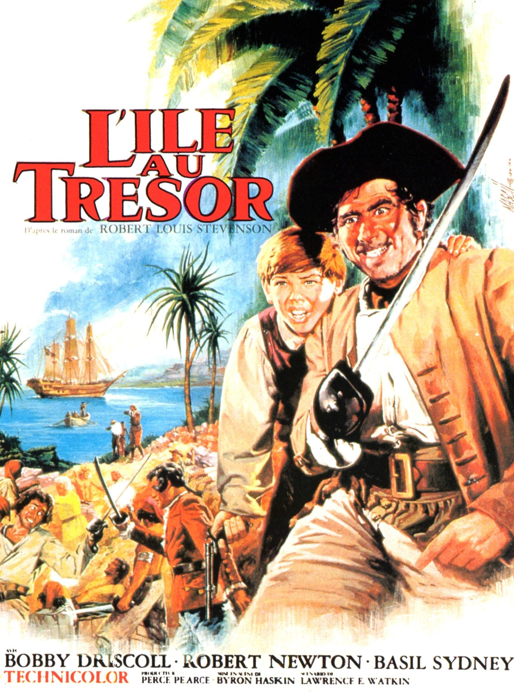

Il est difficile de lire tout le roman de R.L. Stevenson.
Nous regardons donc le film (la version Disney) entre chaque extrait.
Pour aider les élèves, j'affiche au tableau les images plastifiées
des personnages du film.